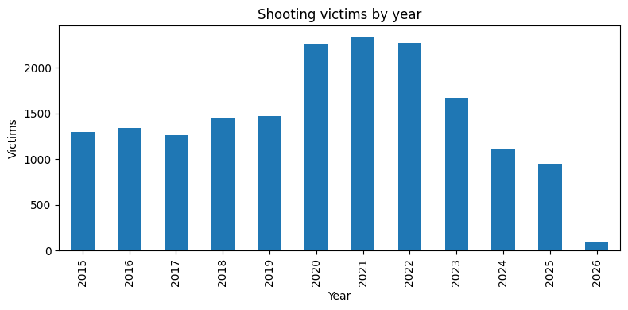
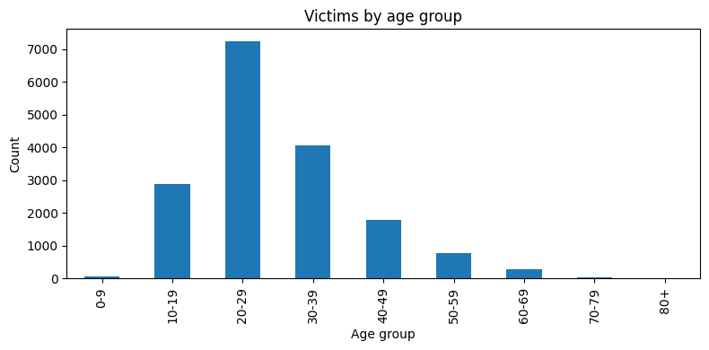
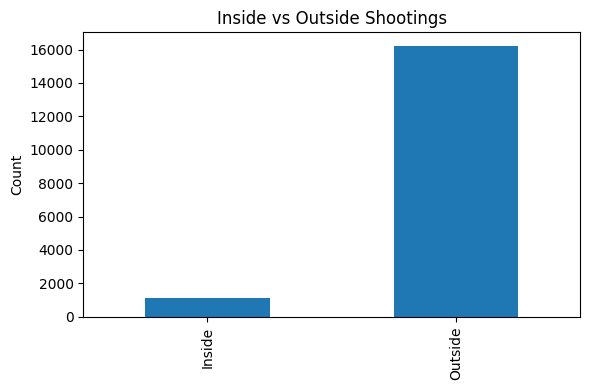
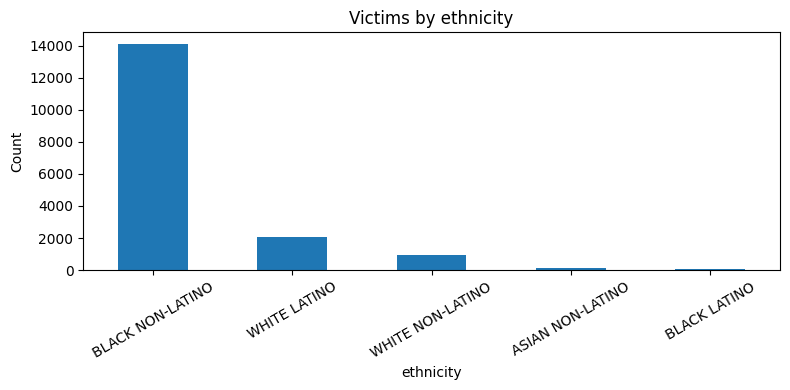

import pandas as pd
import matplotlib.pyplot as plt
import numpy as np
import warnings
warnings.simplefilter('ignore')
shoot_df = pd.read_csv('shootings.csv')
race_mapping = {
'B': 'BLACK',
'W': 'WHITE',
'A': 'ASIAN',
'I': 'INDIGENOUS',
'U': 'UNIDENTIFIED/OTHER',
'O': 'OTHER'
}
latino_mapping = {
0: 'NON-LATINO',
1: 'LATINO'
}
shoot_df['race_long'] = shoot_df['race'].map(race_mapping)
shoot_df['latino_long'] = shoot_df['latino'].map(latino_mapping)
shoot_df['ethnicity'] = shoot_df['race_long'] + ' ' + shoot_df['latino_long']
bins = [0, 9, 19, 29, 39, 49, 59, 69, 79, 100]
labels = ["0-9", "10-19", "20-29", "30-39", "40-49", "50-59", "60-69", "70-79", "80+"]
shoot_df['age_group'] = pd.cut(shoot_df['age'], bins=bins, labels=labels)Philadelphia’s shootings data is easy to reduce to one big number. But the more interesting story is in the patterns: when shootings peaked, who is most affected, where incidents happen, and what stays surprisingly stable over time.
This dataset includes more than 17,500 shooting victims in Philadelphia. Looking more closely, the violence is not random. It is concentrated in very specific ways.
Shootings peaked in the early 2020s
One of the clearest patterns in the dataset is the rise in shooting victims during the early 2020s. The highest year in the dataset is 2021, followed closely by 2022 and 2020.
That matters on its own, but it also sets up the bigger question: did the deeper structure of the violence change too, or just the scale?
year_counts = shoot_df['year'].value_counts().sort_index()
plt.figure(figsize=(8,4))
year_counts.plot(kind='bar')
plt.title('Shooting victims by year')
plt.xlabel('Year')
plt.ylabel('Victims')
plt.tight_layout()
plt.show()
Most victims are young adults
The age breakdown is one of the strongest parts of the story. The average victim is about 29 years old, and the largest age group by far is people in their 20s.
This means the dataset is not spread evenly across the population. It is heavily concentrated among younger Philadelphians.
age_counts = shoot_df['age_group'].value_counts().sort_index()
plt.figure(figsize=(8,4))
age_counts.plot(kind='bar')
plt.title('Victims by age group')
plt.xlabel('Age group')
plt.ylabel('Count')
plt.tight_layout()
plt.show()
Shootings are overwhelmingly outside
Another pattern is even more dramatic: shootings happen far more often outside than inside.
This makes the violence feel less hidden and more public. The streets, sidewalks, and shared spaces of the city are where most of these incidents are taking place.
inside = shoot_df['inside'].value_counts().get(1.0, 0)
outside = shoot_df['outside'].value_counts().get(1.0, 0)
location_counts = pd.Series({'Inside': inside, 'Outside': outside})
plt.figure(figsize=(6,4))
location_counts.plot(kind='bar')
plt.title('Inside vs Outside Shootings')
plt.ylabel('Count')
plt.tight_layout()
plt.show()
The burden is not evenly distributed
The race and ethnicity breakdown makes clear that shootings do not affect all groups equally. The largest category in the dataset is Black non-Latino victims, far exceeding every other group.
This is one of the most important findings in the notebook because it shows that the violence is concentrated not only by age and place, but also across communities.
eth_counts = shoot_df['ethnicity'].value_counts().head(5)
plt.figure(figsize=(8,4))
eth_counts.plot(kind='bar')
plt.title('Victims by ethnicity')
plt.ylabel('Count')
plt.xticks(rotation=30)
plt.tight_layout()
plt.show()
Conclusion
Philadelphia’s shootings data shows that violence in the city is not random.
It is concentrated: - in the early 2020s - among young adults - overwhelmingly outside - and disproportionately in specific communities
The biggest takeaway is not just how many shootings happen. It is how consistently they follow the same patterns.
That consistency is what makes the dataset so powerful — and so disturbing.